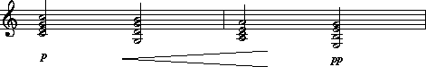
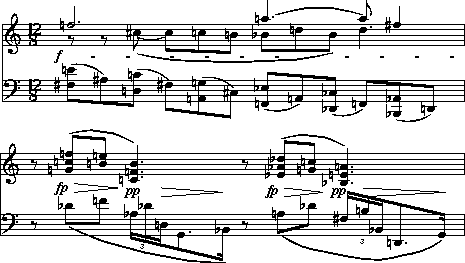

|
|
Musical scores commonly contain dynamic markings that include both written text (such as "subito forte" and "dimin.") and graphic representations (such as hairpin or wedge-shaped crescendo markings). Unfortunately, traditional dynamic markings are often confusing or ambiguous. Consider, for example, the following sequence of dynamic markings from a Beethoven piano sonata:
| pp | cresc. | cresc. | p | cresc. | pp | |||||
What are we to make of these markings? Does the music gradually crescendo from pianissimo to piano? Does this initial crescendo occur in two distinct phases or does the repetition of the term "cresc." merely indicate a continuation of a single crescendo? Does this crescendo move to a dynamic level above piano and abruptly reduce to piano? Does the final crescendo begin at a piano level and get louder -- followed by a relatively abrupt reduction to pianissimo? Or does the final crescendo begin below piano and gradually reach pianissimo? Such ambiguities are rampant in printed musical scores. We can examine the accompanying musical context to help us resolve questions of interpretation, but computers are unable to bring such sophistication to the task.
Humdrum provides two pre-defined representations for score-related
dynamic markings.
One representation
(**dyn)
attempts to represent
the dynamic markings as they appear in a visual rendering of a score.
That is, **dyn represents the visual or orthographic information.
A second representation
(**dynam)
provides a "rationalized"
or canonical means for interpreting score-related dynamic indications.
Users will want to choose one or the other representation depending on
the analytic task being pursued.
In the first instance, **dynam uses standardized data tokens to represent
particular dynamic levels.
Table 28.1 shows the standard representations for **dynam.
For example, the token pp represents the concept of pianissimo,
even if the visual rendering may be pp or
pianissimo or pianiss., etc.
Table 28.1.
p piano pp pianissimo ppp triple piano pppp quadruple piano, [etc] f forte ff fortissimo fff triple forte ffff quadruple forte, [etc] mp mezzo-piano mf mezzo-forte s subito (suddenly), e.g. spp (subito pianissimo), sf (subito forte) z sforzando = fp (forte-piano) < begin crescendo > begin diminuendo ( continuing crescendo ) continuing diminuendo [ end crescendo ] end diminuendo X explicit interpretation (not indicated in the score) x published interpretation (indicated in the score, often in parentheses) r rest (silence) v notated accent or stress
In the case of crescendo and diminuendo markings,
**dynam
requires an explicit interpretation of where the dynamic
marking begins and ends.
The beginning of a crescendo is indicated by the less-than sign (<).
The end of the crescendo is marked by the open square bracket (]).
Between the beginning and end points,
continuation signifiers
are encoded.
For crescendos, continuations are indicated using the open parenthesis;
for diminuendos, continuations are indicated using the closed parenthesis.
In the **dynam representation,
no distinction is made for various ways a composer might indicate a crescendo or
a diminuendo.
For example, it doesn't matter whether a diminuendo is notated as
dim., dimin., diminuendo, decres., decresc.,
decresendo, calando, morendo, se perdant,
cédéz, gradually quieter,
or via a hairpin or wedge graphic diminuendo.
All are represented by > ... ) ... ].
The **dynam representation also requires explicit resolution
of possibly ambiguous dynamic markings.
In many cases, the user will be required to add dynamic markings that
are only implicit in the original score.
Interpreted dynamics are preceded by the upper-case letter X,
so an interpreted diminuendo will be
represented by X> ... X) ... X].
Often published editions will include dynamic markings that have
been introduced by the editor.
In scholarly publications these editorialisms are indicated
in parentheses or square brackets.
Such interpreted dynamics are preceded by the lower-case letter x.
The use of the
**dynam
representation is illustrated in
Example 28.1.
Example 28.1
This example might be encoded as follows:
**dynam**kern *staff1 *staff1 = = p 2c 2e 2g 2cc < . ( 2G 2d 2g 2b = = ( 2A 2c 2e 2a [ . pp 2E 2B 2e 2g = = *- *-
The **dynam encoding is interpreted as follows:
the level begins piano with a crescendo beginning
prior to the second chord;
the crescendo continues until after the third chord
and then the level abruptly drops to pianissimo with
the onset of the fourth chord.
Notice that dynamic markings are "read from left-to-right";
that is, we presume that the crescendo begins piano and
that the pianissimo is an abrupt reduction in level,
rather than presuming that the crescendo builds to the pianissimo
level and so there is an abrupt reduction in level after the initial piano
just before the cresendo begins.
In short, a crescendo (or diminuendo) marking is always assumed to
increase (or decrease) the dynamic level from the preceding indication.
If appropriate, a user can render implicit dynamic shading explicitly. For example, a user might choose to re-code Example 28.1 as either
**dynam**kern *staff1 *staff1 = = p 2c 2e 2g 2cc < 2G 2d 2g 2b = = [ 2A 2c 2e 2a X> . X] . pp 2E 2B 2e 2g = = *- *-
or
**dynam**kern *staff1 *staff1 = = p 2c 2e 2g 2cc Xppp . < 2G 2d 2g 2b = = ( 2A 2c 2e 2a [ . pp 2E 2B 2e 2g = = *- *-
Notice that null data records may be inserted as necessary to clarify
the moment of dynamic change.
The
**dynam
representation makes use of the common system
for representing barlines.
The
**dyn
representation provides a method for representing
the orthographic appearance of notated dynamic markings.
Unlike **dynam, the **dyn representation distinguishes
between different ways of identifying a dynamic marking.
For example, dim., dimin., diminuendo, decres.,
decresc., decresendo, are all regarded as different
from each other.
Composers often have idiosyncratic ways of writing dynamic markings.
As a result, the specific terms used may have repercussions,
for example, in resolving cases of disputed composership.
In some circumstances, it is thought that individual composers
distinguish the terms in their own minds.
For example, a composer might use decrescendo as a general
term to indicate a temporary descending dynamic shape,
whereas diminuendo might have a more specific meaning
of a `dying away' or `fade-out' gesture.
In the **dyn representation the horizontal position of dynamic markings
is indicated in quarter-durations with respect to the previous barline.
This number appears prior to the dynamic signifier,
hence 4.1f means a forte (e.g., f) marking just after
the horizontal position of the fourth quarter in the measure.
The vertical position of dynamic markings is indicated with respect to
the middle line of a corresponding staff;
this number appears in curly braces.
< begin wedge-graphic crescendo marking > begin wedge-graphic diminuendo marking [ terminate wedge-graphic crescendo marking ] terminate wedge-graphic diminuendo marking ( continuing wedge-graphic crescendo ) continuing wedge-graphic diminuendo {...} vertical position (in staff-line steps from mid-line) #... size of marking (in staff-line steps) :number: density of dashed lines in strokes per quarter-duration /.../ wedge opening size (in staff-line steps) r rest (silence) H marking appears in square brackets
By way of illustration, consider Example 28.2.
Example 28.2: Arnold Schoenberg, Three Piano Pieces, Op. 11, No. 2, excerpt.
Using the
**dyn representation, Example 28.2 might be encoded as follows:
**dyn**kern **kern **kern *staff1/2 *staff2 *staff1 *staff1 * *clefF4 *clefG2 *clefG2 * *M12/8 *M12/8 *M12/8 = = = = 0.8f{-4} 8F# 8en 8r 2.ffn .8A# 8r . .8Dn 8cn [8cc# . .8F# 8cc#] . .8AAn 8Gn 8ccn . .8C# 8bn . .8FFn 8E- 8b- [4.aan .8AAn 8ddn . .8DD- 8C- 8b- . .8FFn 4.dd 8aa] .8BBB- 8AA- . 4ff# .8DDn . . * * *v *v = = = .8r 8r 1.4fp{-4.5} {8d- {8gn 8ccn 8ffn 1.6>{-4.3}/1.5/ . . ) 8fn 8bn 8een 2.4]{-4.3} . . 2.5pp{-5} 24A- 4.cn 4.fn 4.b} .24d- . 2.8>/1.4/ 24Dn . ) 8.GG . 4.2] 16BB-} . .8r 8r 4.4fp{-4.5} {8An {8e- 8a- 8dd- 4.6>/1.5/ . . ) 8d- 8gn 8ccn 5.2] . . 5.4pp{-4.5} 24F# 4.B- 4.en 4.a} 5.7>/1.4/ 24Bn . ) 24BB- . ) 8.DD . 6.8] 16GG} . = = = *- *- *-
The *staff1/2 tandem interpretation indicates that the dynamic markings
pertain to both staffs 1 and 2, however all vertical
**dyn
distance measures are encoded with respect to staff 1.
(Reversing the numerical order -- *staff2/1 -- would cause
all distances to be measured with respect to staff 2.)
The token 0.8f{-4} means that the signifier f is located
0.8 quarter-duration spaces from the beginning of the bar and
4 staff-line steps below the center line of staff 1.
The token 1.6>{-4.3}/1.5/ means that a wedge diminuendo marking begins
1.6 quarter-durations from the beginning of the bar;
the size of the opening of the wedge is 1.5 staff-line steps wide and
the center of the opening is located 4.3 staff-line steps below the center
line for staff 1.
The token 2.4]{-4.3} means that a wedge diminuendo marking ends
2.4 quarter-durations from the beginning of the bar;
the tip of the wedge converges at a point 4.3 staff-line steps below
the center line for staff 1.
Changing this value allows tilted wedges to be represented.
The
**dB
representation provides a way to represent
intensity in decibels.
Decibels can be expressed in relative or absolute terms.
Absolute values are represented according to sound pressure level (SPL).
An absolute representation is indicated by the presence of the *SPL
tandem interpretation.
Zero decibels (SPL) corresponds roughly to the quietest sound
detectable under ideal circumstances.
A quiet room is roughly 40 dB in intensity;
a conversation produces roughly 70 dB,
a vacuum cleaner produces roughly 80 dB,
a noisy factory produces roughly 90 dB,
and a passing loud motorcycle generates roughly 100 dB (SPL).
The **dB representation provides a convenient way
to represent sound intensity in a numerical form.
A numerical representation allows us to carry out a
variety of calculations and comparisons.
The
db
command translates dynamic markings to dynamic level expressed
in decibels;
specifically,
db
translates from the **dynam representation to
**dB representation.
By default,
db
uses the following mapping:
dynamic level dB SPL fffffff 115 ffffff 110 fffff 105 ffff 100 fff 90 ff 80 f 75 mf 70 mp 65 p 60 pp 55 ppp 50 pppp 45 ppppp 40 pppppp 35 ppppppp 30 v +5
Notice the presence of the
accent
signifier (v);
the assigned value (+5) means that any encoded accents will
receive a decibel level 5 dB higher than the basic sound pressure level
at that point in the score.
For example, an explicitly accented note occurring in a fortissimo
passage will be assigned a value of 85 dB SPL.
Users can define other mappings by using the -f option for db. With -f the user provides a filename that contains the non-default mapping values. The format for this file is the same as that shown in the above table. Each table entry specifies a dynamic marking, followed by a tab, followed by a numerical value.
In the case of crescendo and diminuendo markings, the db command attempts to interpolate a series of values between any preceding and subsequent dynamic markings. The following example shows a pianissimo marking at the beginning of measure 5; a crescendo marking spans all of measure 6, and a mezzo-forte marking appears in measure 7. The right-most spine shows the corresponding output generated by the db command. It shows an interpolation between the two dynamic levels.
**dynam**dB *SPL * =5 =5 pp 55 . . . . . . =6 =6 < 58 ( 61 . . ( 64 ] 67 =7 =7 . . mf 70 . .
The interpolation begins with the crescendo indicator and increments for each continuation signifier (i.e., the open parentheses). Interpolations are linear and continue up to the crescendo termination signifier. The size of the increment value depends on starting and ending dynamic levels as well as the number of crescendo-continuation signifiers. In the above case four pertinent crescendo signifiers separate the pianissimo and mezzo-forte markings; each of these records has been incremented by 3 decibels. Where necessary, decimal values are output. Notice that null tokens (such as those in the middle of measure 6) are ignored in the calculation.
The
**dB
representation can be used to assist a number
of tasks related to musical dynamics.
Suppose, for example, that we want to compare the average overall
dynamic levels for two arabesques:
extract -i '**dynam' arabesque1 | db | rid -GLId | stats
extract -i '**dynam' arabesque2 | db | rid -GLId | stats
Similarly, we might compare the overall dynamic levels between two sections of a single work. Perhaps we wish to know whether the exposition is on average louder than the development section:
yank -s Exposition -r 1 symphony3 | extract -i '**dynam' \
| db | rid -GLId | stats
yank -s Development -r 1 symphony3 | extract -i '**dynam' \
| db | rid -GLId | stats
Does a work tend to begin quietly and end loudly, or vice versa? Here we might compare the first 10 measures with the final 10 measures. Notice the use of ditto to increase the number of values participating in the calculation of the average dynamic level:
yank -n = -r 1-10 janacek | extract -i '**dynam' \
| ditto -s = | db | rid -GLId | stats
yank -n = -r '$-10-$' janacek | extract -i '**dynam' \
| ditto -s = | db | rid -GLId | stats
Suppose we want to determine whether there is an association between
dynamic levels and pitch height for Klezmer music.
That is, does the music tend to be quieter for lower pitches and
louder for higher pitches?
A straightforward way to determine this is to compare dynamic level
with pitch height -- represented in semitones
(**semits).
The
correl
command can then be used to measure Pearson's coefficient of correlation.
If there is a relationship between pitch height and dynamic level
then the correlation should be positive.
semits klezmer | correl -s ^= -m
This command assumes an input consisting of two spines -- one pitch-related
and a **dB spine.
The
-s
option for
correl
is used to skip barlines so bar numbers aren't included in the calculation.
The
-m
option for
correl
disables the "matched pairs" criterion.
Normally, if a number is found in one spine but not the other then
correl
will complain and terminate.
With the
-m
option, each encoded pitch need not have a corresponding dynamic level indication
and vice versa.
Similarly, we could use this same approach to determine whether there is a relationship between duration and dynamic level. Are longer notes more likely to be louder in Klezmer music?
dur klezmer | correl -s ^= -m
A variation on this procedure might be to restrict the comparison over a specified pitch range. For example, one might think that higher pitches tend to be louder but that lower pitches are neither softer nor louder than usual. In order to test this view we can use the recode command to reassign "low" pitches to a single value. By way of illustration, the reassignment might presume that below G4 (semits=7) there is no relationship between pitch height and dynamic level. We might recode all values lower than 7 to a unique string (such as `XXX') and then use grep -v to eliminate these notes from a subsequent correlation:
extract -i '**kern' klezmer | semits recode > temp1
extract -i '**dB' klezmer > temp2
assemble temp1 temp2 | grep -v 'XXX' | correl -s ^= -m
Suppose we want to identify whether various works exhibit "terraced"
or "graduated" dynamics.
In the case of terraced dynamics, we would expect to see many relatively
abrupt dynamic contrasts, such as alternations between forte and piano.
There are several ways of approaching this question.
One approach might translate
**dynam
data to
**dB
data and then calculate the average (or maximum) changes in dynamic level.
If a work contains many crescendos and diminuendos markings,
then most of the changes in **dB values will be small.
Conversely, alternations between contrasting dynamic levels will cause
the average decibel differences to be larger.
The
xdelta
command can be used to calculate the changes in dynamic level.
Notice that it is important to avoid using the
ditto
command since repeated dynamic level values will cause the average
dynamic difference to approach zero.
extract -i '**dynam' haendel | db | xdelta -a -s = | rid -d \
| stats
Another approach to this problem might be to count the number of dynamic contrasts, avoiding the use of the db command. In the following pipeline, we use context to generate pairs of dynamic markings, and then use grep to count the number of alternations between f and p.
extract -i '**dynam' haendel | grep -v '[][()=rX]' | rid -d \
| context -n 2 | grep -c 'f p'
extract -i '**dynam' haendel | grep -v '[][()=rX]' | rid -d \
| context -n 2 | grep -c 'p f'
Conceptually, crescendos and diminuendos can be paired to form one of two dynamic gestures. A "swell" gesture consists of a crescendo followed by a diminuendo. Conversely, a "dip" gesture would consist of a diminuendo followed by a crescendo. Musical intuition would suggest that swell gestures are more common than dip gestures. We could test this view as follows:
extract -i '**dynam' grieg | grep -v '[][()=rX]' | rid -d \
| context -n 2 | grep -c '< >'
extract -i '**dynam' grieg | grep -v '[][()=rX]' | rid -d \
| context -n 2 | grep -c '> <'
Dynamic level data is not always easily available.
One possible source is to translate MIDI key-velocity data to
an estimated decibel value.
Actual sound pressure levels will depend on the timbre of the MIDI
sounds, the specific pitch played, and the volume on the output amplifier.
Nevertheless, a rough estimate of sound pressure level may be useful
for various analytic tasks.
Recall that in the
**MIDI
representation, key-velocity data is encoded
as the final number in three-number tokens where numbers are separated by slashes.
The first value in the triplet is elapsed clock ticks and the second value
is the MIDI key number (positive for key-on events, negative for key-off events).
By way of reminder, the following example shows three
**kern
notes with a corresponding **MIDI representation.
**kern**MIDI * *Ch1 4c 72/60/64 4d 72/-60/64 72/62/64 4e 72/-62/64 72/64/64 . 72/-64/64 *- *-
In order to translate to a **dB representation, we must first isolate the key velocity values for key-on events. The following humsed command simply eliminates all data up to (and including) the last slash character:
extract -i '**MIDI' mono_input | humsed 's/.*\///'
This will leave us with just the key-down velocity data. Let's suppose that the following rough decibel equivalents are established:
key velocity approximate dB SPL 127 85 100 80 90 77 80 74 70 70 60 65 50 60 40 53 30 44 20 32 10 21 1 10 0 0
An appropriate reassignment file for recode would begin as follows:
>=12785 >=100 80 >=90 77 >=80 74 >=70 70 etc.
The completed translation would be accomplished by the following pipeline:
extract -i '**MIDI' mono_input | humsed 's/.*\///' \
| recode -f reassign | sed 's/**MIDI/**dB/'
Notice the use of the sed command to replace the **MIDI interpretation by a **dB interpretation.
In this chapter we have introduced three representations related
to musical dynamics.
The
**dyn
representation allows us to encode dynamic markings
as they appear visually in a printed score.
Unfortunately, traditional notated dynamic markings are often confusing
or ambiguous.
In order to facilitate some types of analytic processing it is useful
to generate a more rationalized interpretation of the dynamics
of a work.
The
**dynam
representation provides a canonical scheme
for representing basic notated dynamic markings
where ambiguities are resolved by explicitly interpreting
the meaning of dynamic markings.
A third scheme
(**dB)
provides a scheme for representing continuous
dynamic levels in decibels.
We have seen that the
db
command (which translates from **dynam to **dB)
allows us to pose and answer a variety of questions related to the
dynamic organization of music.